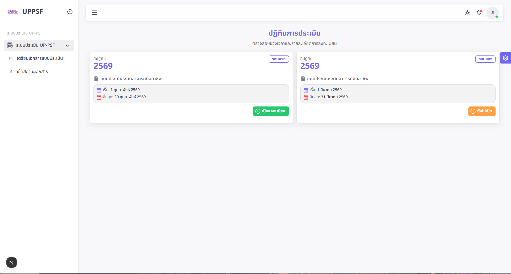
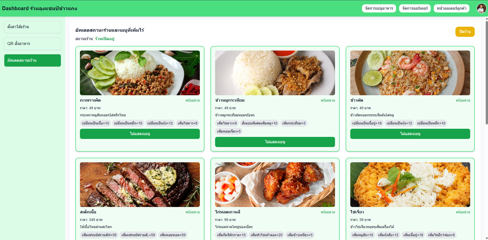
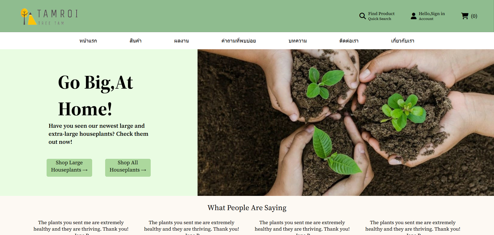

Leave workflows, approvals & data migration
Worked with leave calculations, approval policies, backdated records, authorization, cancellation rules, reporting, PostgreSQL validation and legacy balance migration.
Software Engineering graduate with hands-on experience across business analysis, software testing, full-stack development, PostgreSQL, data migration, automation, and enterprise systems.
My strongest experience comes from working with enterprise workflows where business rules, permissions, data quality and release confidence matter.
Worked across JOiNS+ HR Portal and MEGA-T ITSM Platform, translating business rules into testable scenarios, validating APIs and databases, investigating defects, supporting data migration, and contributing to automation and CI/CD-related work.
I can move between understanding the business, checking system behavior, reading data, and working with implementation details.
Translate operational rules into clear system behavior, workflows, permissions, conditions and testable acceptance scenarios.
Functional, regression, API and end-to-end testing with emphasis on business rules, RBAC, SLA logic, defects and retesting.
PostgreSQL queries, data validation, dry runs, reconciliation, duplicate checks and migration integrity.
Hands-on exposure to Next.js, React, NestJS, Prisma, APIs and full-stack business features.
Playwright, Vitest, GitHub Actions, Docker and practical troubleshooting around deployment workflows.
Two systems that best show how I work across product rules, testing, data, implementation detail and delivery.
Worked with leave calculations, approval policies, backdated records, authorization, cancellation rules, reporting, PostgreSQL validation and legacy balance migration.

Worked with ticket workflows, priority handling, SLA calculations, RBAC, tenant isolation, API/database investigation and automated validation.

Paperless assessment workflow with Next.js, TypeScript, RBAC and REST API integration.

QR-based ordering, operational dashboard, real-time workflow and export features.

User research, Figma prototyping and responsive e-commerce front-end design.
Grouped by how I actually use them rather than showing a wall of logos.
Requirements Analysis
Test Scenario Design
Functional / Regression
API / E2E Testing
Defect Investigation
TypeScript
Next.js / React
NestJS / Node.js
REST APIs
Prisma ORM
PostgreSQL
Data Migration
Data Reconciliation
Playwright
Vitest
Git / GitHub
GitHub Actions
Docker
Caddy
Figma / Jira
Enterprise HR and ITSM systems: business rules, testing, PostgreSQL, migration, automation and delivery support.
UP-PSF Digital Assessment System: paperless workflow, frontend implementation, RBAC and API integration.
Restaurant management and e-commerce projects combining UX, development and system thinking.
GPA 3.29